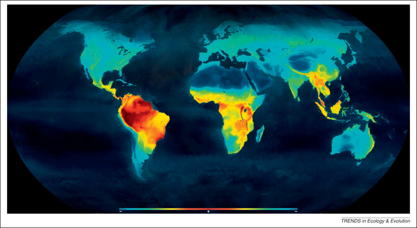
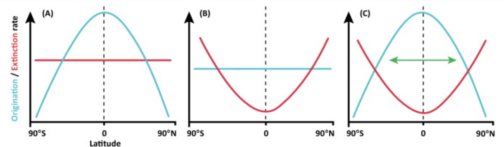

# Keyword<br>
# Abstract<br>
<script src="../library/marked.min.js"></script>
<link rel="stylesheet" type="text/css" href="../library/index.css">
<head>
<title>

</title>
</head>
<body>

<font size="5"> 
</font>


<script>md(`


## <p id="bb">導入</p>


<div class="box1">

<p>
種多様性の緯度勾配 (LDG) はとても一般的な生物の分布パターンである．
<figure><figcaption>脊椎動物の種多様性マップ</figcaption></figure><br>
<br>
本研究では，今まであまり考慮されてこなかった過去のデータを用いて一般的な説明を試みる．
</p>


### 現在の種多様性の緯度勾配

<p>

LDGは，海陸を問わず，多くの分類群で存在する [<a href="https://www.annualreviews.org/doi/abs/10.1146/annurev.ecolsys.34.012103.144032">ref1</a>, <a href="https://pubmed.ncbi.nlm.nih.gov/14970922/">ref2</a>, <a href="https://onlinelibrary.wiley.com/doi/10.1111/j.1365-2699.2008.01963.x">ref3</a>]．

</p>

<p>

一方で，いくつかの例外も存在する  [<a href="https://doi.org/10.1073/pnas.0709202104">ref1</a>, <a href="https://pubs.geoscienceworld.org/gsa/geology/article/130145/Quaternary-origin-of-the-inverse-latitudinal">ref2</a>]．
例えば，<a href="https://pubmed.ncbi.nlm.nih.gov/17874387/">サンショウウオとカエル</a>や，海の鳥や哺乳類 [<a href="https://doi.org/10.1111/j.1600-0587.1998.tb00399.x">ref1</a>, <a href="https://www.sciencedirect.com/science/article/pii/S0024406601905656">ref2</a>, <a href="https://doi.org/10.1038/nature09329">ref3</a>] である．ただし，それ以外では海の植物性種や寄生生物に限られる．

</p>

<p>

半球間の偏りも知られている．例えば，北半球ではアリの種多様性は低い．この原因は，最近の気候の違い，進化的イベント（局所絶滅など）などであると考えられている．このようなケースでは一方の半球で種が多いという場合が多く，一方の半球にのみ熱帯ピークがあり他方にはないというケースは少ない．

</p>

<p>

以上は例外的である．LDG は最も支配的なマクロ生態学的パターンである [<a href="https://doi.org/10.1089/ast.2008.0253">ref</a>]．

</p>

### LDGの説明

<p>
LDGの成因を知ることは，地理的種多様性パターンの理解，生物多様性の環境変動に対する応答を知る上で重要である．
</p>

<p>
熱帯において Net diversification rate (種分化率 - 絶滅率) が高いことは知られている [<a href="https://www.sciencedirect.com/science/article/pii/S0169534704002745">ref1</a>, <a href="https://doi.org/10.1890/05-0112">ref2</a>, <a href="https://doi.org/10.1126/science.1130880">ref3</a>, <a href="https://doi.org/10.1111/j.1461-0248.2007.01020.x">ref4</a>, <a href="https://doi.org/10.1126/science.1135590">ref5</a>]．ただし，これが熱帯での高い種分化率を反映しているのか，低い絶滅率を反映しているのか，その両者なのかは未知である．
</p>

<p>
多くの仮説は，循環的・相互結合的，限定的，といった理由によって退けられる．なお検討の余地があるのは，(i) 気候，(ii) 地理的：熱帯は地理的に広いから多くの種が存在できる，(iii) 歴史的：熱帯は気候変動による影響受けにくかったため種が多く蓄積された．
</p>

<p>

</p>


</div>


<div class="box1">

### Museum / Cradle model

<p>
絶滅率が低い (Museum) ，起源率が高い (Cradle) ：これらのどちらか，あるいはどちらもがLDGのパターンに寄与している？
<figure><figcaption>(A) Tropics as cradle. (B) Tropics ad museum. (C) Out of tropics（熱帯で起源が多く，絶滅が少ない＋熱帯から熱帯外に種が移動する）.</figcaption></figure><br>

</p>
<p>
これらの仮説は，どれも部分的に反証されている．
<ul>
<li>最近の鳥や哺乳類では，高緯度のほうが起源率が<a href="https://doi.org/10.1126/science.1135590">高い</a></li>
<li>海の無脊椎動物では，高緯度のほうが絶滅率が<a href="https://doi.org/10.1111/j.1420-9101.2007.01317.x">高い</a></li>
<li>二枚貝では，極の絶滅率が<a href="https://doi.org/10.1371/journal.pone.0015362">低い</a></li>
<li>緯度と多様化率に関係がない分類群が多い（鳥，カエル，有孔虫，哺乳類）[<a href="https://doi.org/10.1111/j.1461-0248.2007.01020.x">ref1</a>, <a href="https://doi.org/10.1098/rspb.2012.1393">ref2</a>, <a href="https://www.scopus.com/inward/record.url?eid=2-s2.0-33750945167&partnerID=10&rel=R3.0.0">ref3</a>, <a href="https://doi.org/10.1111/j.1439-0469.2007.00443.x">ref4</a>, <a href="https://doi.org/10.1130/G30287A.1">ref5</a>, <a href="https://doi.org/10.1038/nature11631">ref6</a>]．</li>
<li></li>
</ul>
</p>
Museum/Cradle による仮説には問題があるかもしれない．起源や絶滅のタイミングの影響（起源したのが寒い時期 or 暖かい時期／気候勾配が急な時期 or ゆるやかな時期）や，Clade ごとの影響（例：Eocene 以降のアリは，北半球で大規模な絶滅があった）を考慮する必要があるかもしれない．これまでの研究は過去 30Ma に限定されているので，もっと前を考慮することで，様々な要因の相対的影響を明らかにできるだろう．
</p>

</div>


<div class="box1">

### 気候要因

<p>
地理的，歴史的な仮説では完全な説明は無理そうな一方で，気候は主要な要因だとみなされることが多い[<a href="https://doi.org/10.1111/j.1461-0248.2012.01828.x">ref1</a>, <a href="https://www.sciencedirect.com/science/article/pii/S0960982209011828">ref2</a>]
．<b>直接的には</b>，熱帯において環境の季節変動が小さいことが生理学的に影響する．これにより，環境耐性が低く移動能力も低い生物が生まれ，個体群の隔絶→種分化につながる．<b>間接的には</b>，太陽からのエネルギー供給が低緯度ほど強いことが，植物の生産量の増加→スペシャリスト種の個体数増大&植物の多様化→その他の種の多様化につながる．ただし，この2つの要因を区別して扱うことができている研究は少ない[<a href="https://onlinelibrary.wiley.com/doi/full/10.1111/j.1365-2699.2008.01963.x">ref</a>]．
</p>

<p>
化石データによる検証は有望である．海の生物の化石は，小さな無脊椎動物が充実している一方，陸域は脊椎動物のデータが充実している（恐竜が252-66Ma; 中生代．哺乳類がそれ以降の新生代）．近年よく使われるデータベースが<a href="http://www.paleodb.org/">Paleobiology Database</a>．
</p>

</div>


<div class="box1">

### 化石データを使う際の問題点と対策

<p>
化石データにはバイアスが含まれている．地理的：現在に残っている層に時空間的変動がある＆陸が移動している；人為的：サンプルは欧米に偏っている<a href="https://doi.org/10.1130/0091-7613(1993)021%3C0065:PSBPSD%3E2.3.CO;2">ref</a>．
</p>

<p>
問題に対する対処としては，3通りある：
<ol>
<li>サブサンプル：異なるサンプルサイズのデータを，同じサンプルサイズになるように補正する：rarefactionなど．</li>
<li>残差：サンプルに関連する変数（サンプルコレクションの数など）を使った回帰の残差によって多様性パターンを評価する<a href="https://doi.org/10.1111/j.1475-4983.2007.00693.x">ref</a>．</li>
<li>系統的多様性推定：種分化のタイミングを校正した系統樹を使い，存在していた（すでに種分化していた）が化石が見つかっていない期間を推定する（いわゆる ghost leneage ）．</li>
</ol>

サブサンプルは，
</p>

</div>


## <p id="bb">方法</p>

<div class="box1">

テスト

<p>
<font size="2" color="888888">
test
</p></font>

<figure><figcaption>脊椎動物の種多様性マップ</figcaption></figure><br>

</div>


`)</script>
2022/06/21 レジュメ作成：五十里
<a href="../index.html">return to index</a>


</body>